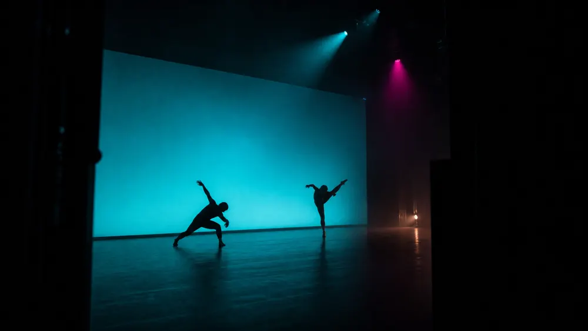
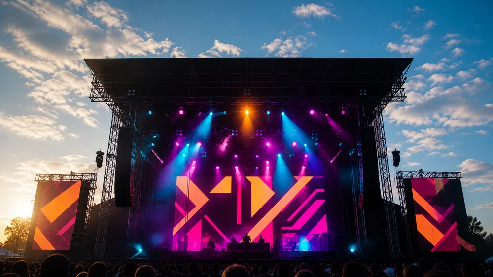
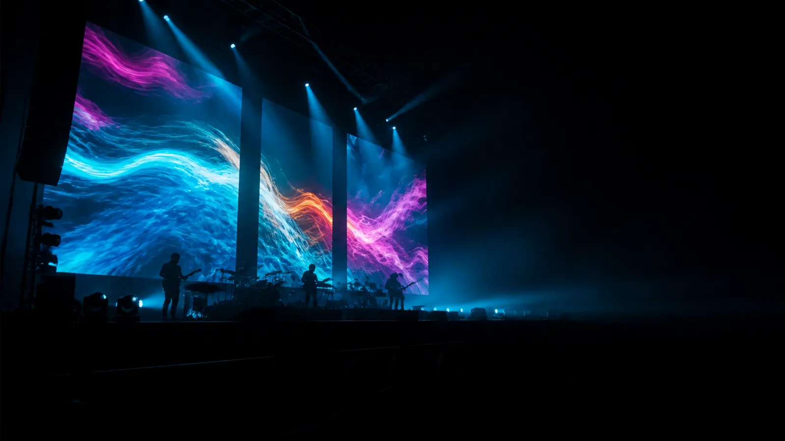
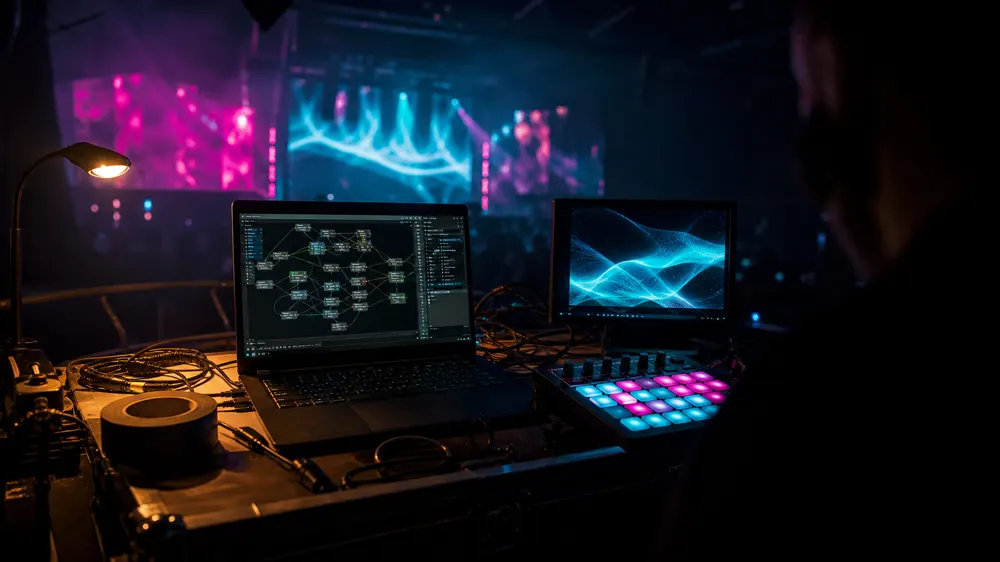

00OPEN
01HOW
不預錄的意思是我在台下也在演出
預錄的畫面遇到安可、遇到樂手即興、遇到設備出狀況就只能硬播。 我把訊號接進來，畫面跟著聲音走，所以每一場都不一樣，也不會對不上。
02LOOK
我的畫面長什麼樣
同一套系統，三種場的做法完全不同。決定畫面的是場地與音樂，不是我的喜好。



03DESK
現場那三個小時我在做什麼

- 訊號進來音訊直接進電腦，鼓組與人聲分兩軌。分開才控制得了誰在推畫面。
- 節拍我手打不用自動偵測。機器抓錯拍的時候，現場沒有人救得了。
- 手上只調三件事密度、速度、顏色。其他全部事先設好，現場沒有時間找參數。
- 出事的時候備援是一段可以無限循環的畫面，按一下就切過去，觀眾不會發現。
04SET
跑過的場
- 2025
150 分
小巨蛋 · 樂團巡演最終場
三面屏＋地板，安可加了兩首沒排練過的，畫面現場跟著走。
- 2025
70 分
台中歌劇院 · 當代舞作
編舞要求畫面不能搶舞者，整場只用單色與呼吸的節奏。
- 2024
2 天
戶外音樂祭 · 主舞台
下午場有太陽，對比得整個重打。這種場我一定會去現場看過再報價。
05SPEC
可以配合的
訊號NDI／SDI／HDMI，可吃 MIDI 與音訊觸發
編制一人可跑，大場加一位技術
不接純預錄影片剪輯、婚禮
檔期2026 上半年剩三場
06CALL